Trước khi rơi vào khủng hoảng từ năm 2011-2013, Vinaconex Xuân Mai là niềm tự hào của ngành xây dựng miền Bắc. Xuân Mai từng là đơn vị có doanh thu lớn nhất và lợi nhuận đứng thứ 2 trong Vinaconex. Đây cũng là công ty đầu tiên xây và bán nhà giá rẻ tại miền Bắc.
Thế nhưng, kết thúc năm 2013, Vinaconex Xuân Mai lỗ luỹ kế 88,44 tỷ đồng và có nguy cơ phải ngừng hoạt động vì mất cân đối dòng tiền. Cùng năm, Vinaconex chuyển nhượng 51% cổ phần cho nhóm cổ đông mới mà ông Bùi Khắc Sơn (hiện là Chủ tịch HĐQT) làm đại diện và đổi tên thành Công ty CP Đầu tư và Xây dựng Xuân Mai (Xuân Mai Corp.)
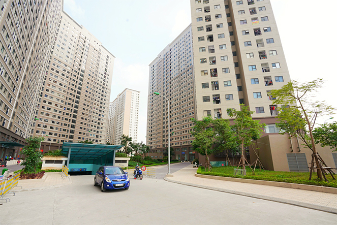Chỉ sau một năm tiếp quản, năm 2014, Xuân Mai Corp. có lãi trở lại với lợi nhuận hợp nhất 91 tỷ đồng (lớn nhất lịch sử công ty đến thời điểm đó). Đặc biệt, việc tái cấu trúc công ty được thực hiện nhưng với toàn bộ nhân sự chủ chốt cũ được giữ nguyên, chỉ có HĐQT được bổ sung thêm thành viên.
5 năm sau giai đoạn tái cấu trúc, chúng tôi đã có cuộc trao đổi với ông Bùi Khắc Sơn, Chủ tịch HĐQT Xuân Mai Corp về cách tái cấu trúc khá kỳ lạ tại công ty này.
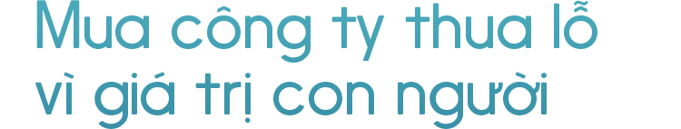Cách đây 5 năm, một nhóm nhà đầu tư đã mua 51% cổ phần của Công ty Xuân Mai và thực hiện cơ cấu lại. Là người đại diện cho những cổ đông mới thời đó, ông thấy điều gì hấp dẫn ở một công ty thua lỗ lớn và mất cân đối nặng về dòng tiền?
Tôi có thuận lợi là đã có thời gian làm việc với ban lãnh đạo Xuân Mai trước đó nên hiểu về con người ở đây, họ đang ở trong hoàn cảnh nào và cần điều gì. Chúng tôi quyết định mua Xuân Mai khi công ty đang gặp nhiều khó khăn vì giá trị về con người. Nếu dựng lên một đơn vị hoàn toàn mới thì vấn đề tài chính, bộ máy sẽ dễ dàng hơn nhưng không thể có con người và thương hiệu như ở Xuân Mai được.
Các cổ đông mới thời đó mua không phải vì giá trị tài sản của Xuân Mai?
Thực tế là vào lúc mua, giá trị đất đai, tài sản của Xuân Mai không có bao nhiêu, thậm chí còn nhỏ hơn giá trị ghi nhận. Thế nhưng, công ty có những công nghệ xây dựng tốt, với những con người cực kỳ đam mê. Đây cũng chính là những yếu tố khiến chúng tôi quyết định mua.
Về việc thua lỗ và công ty gặp khó khăn thì có cả nguyên nhân chủ quan và khách quan. Chủ quan là do thị trường bất động sản đi xuống, hầu hết các công ty địa ốc đều gặp khó khăn cả. Còn khách quan thì việc quản lý dòng tiền và chi phí ở Xuân Mai thời kỳ đó chưa tốt. Thế nhưng, tôi cho rằng một công ty với truyền thống lịch sử, thương hiệu và con người như Xuân Mai thì khó khăn đó chỉ là tạm thời thôi.
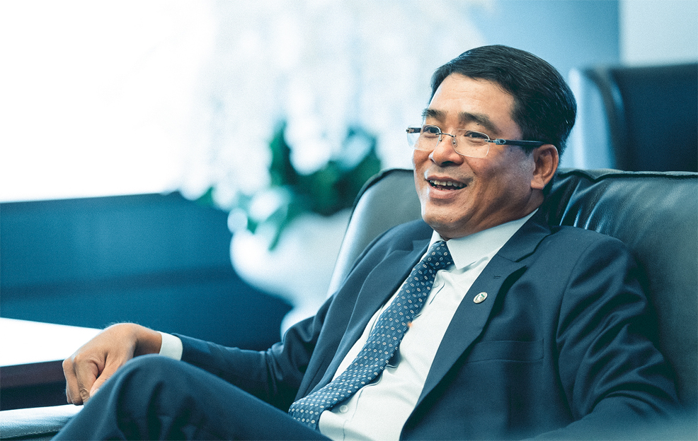Ông nhấn mạnh về giá trị con người là yếu tố quan trọng khiến nhóm cổ đông mới mua lại Xuân Mai, nhưng nếu nhân sự tốt thì công ty đâu gặp những khó khăn như vậy?
Phải nhìn chuyện này ở nhiều góc mới thấy rõ. Ngoài việc thị trường bất động sản đi xuống làm công ty khó khăn thì có yếu tố khác liên quan đến cơ chế.
Thực chất, Xuân Mai trước đây vẫn là một công ty Nhà nước dù đã chuyển sang mô hình cổ phần. Do vẫn mang cơ chế Nhà nước nên tầm nhìn luôn bị gò bó trong một cái khung, không ai dám vượt rào. Họ có thể làm tốt nhưng nếu chỉ trong cái vòng đó thì sẽ rất nhiều thứ vướng.
Cơ chế kiểu Nhà nước cũng không tạo ra nhiều động lực cho cán bộ công nhân viên, có năng lực và sáng kiến nhưng không được đầu tư mạnh thì cũng khó phát triển. Nói đúng ra là quyền được làm việc và sáng tạo có phần bị hạn chế.
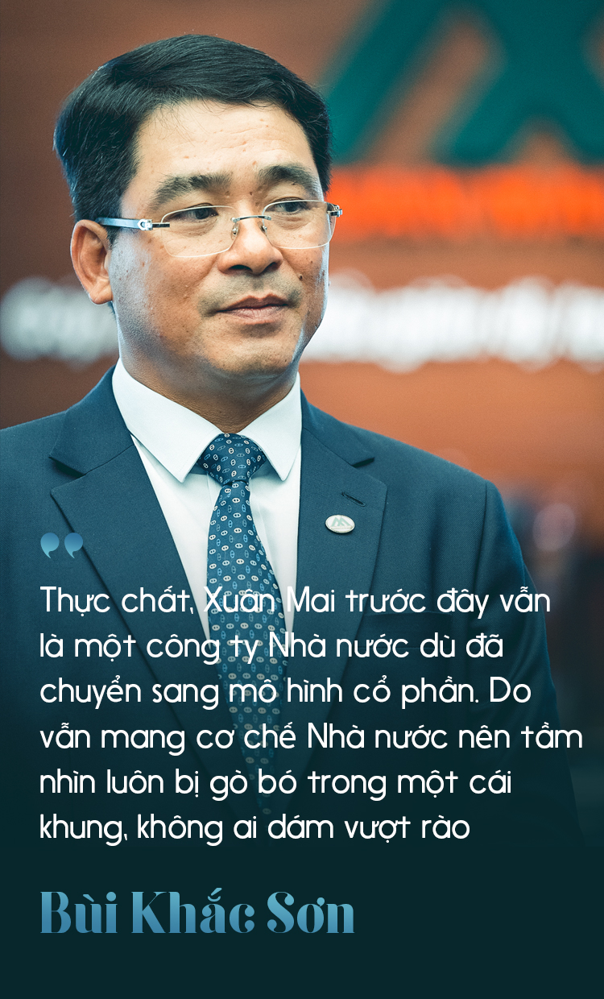Còn khi chuyển sang cơ chế cổ phần thực sự thì khác. Đơn giản như có một số dự án lẽ ra phải bán đi, chịu lỗ để lấy vốn kinh doanh, đầu tư chỗ khác hiệu quả hơn nhưng không ai dám quyết. Bởi làm vậy có thể bị coi là mất vốn của Nhà nước và phải chịu trách nhiệm trước pháp luật. Trong khi đó, với cơ chế cổ phần hoàn toàn thì chỉ cần cổ đông nhất trí thực hiện là ổn.
Thực tế là khi vào làm việc tại Xuân Mai, tôi cảm nhận rất rõ sự đam mê, tâm huyết và khát vọng ban lãnh đạo vẫn còn nguyên bất chấp những khó khăn mà công ty đang gặp phải.
Nhưng khi về Xuân Mai, ông vẫn yêu cầu thực hiện một số dự án không đem lại lợi nhuận. Vì sao vậy?
Thực ra, chúng tôi làm kinh doanh hướng tới hiệu quả chứ không cần hình thức. Thế nhưng, hiệu quả không chỉ có nghĩa là lợi nhuận mà có những cái tương đương tiền là thái độ làm việc, uy tín, kinh nghiệm…
Tôi vẫn yêu cầu thực hiện một số dự án dù lợi nhuận thấp vì có làm việc mới thể hiện được bài học trong lao động sản xuất, có khấu hao, tăng cường không khí…còn không làm việc thì không có gì hết.
Khi vào tái cấu trúc Xuân Mai, ông là người đại diện cho nhóm cổ đông mới vẫn dùng nguyên ban lãnh đạo cũ. Làm sao có thể thay đổi một công ty đang gặp khó khăn lớn với ban lãnh đạo cũ mà không gặp rắc rối về nhân sự?
Có lẽ tôi là một người rất may mắn. Con người ở Xuân Mai hiền, đam mê và tử tế. Tôi thấy mình cũng có 3 điều đó nên dễ hòa đồng với mọi người. Thông điệp của tôi khi đại diện cho nhóm cổ đông mới cũng rất rõ ràng: trước tiên là vì Xuân Mai đã, các chuyện khác tính sau. Và tất cả mọi người đều ở lại để vực dậy Xuân Mai, không ai đi sang công ty khác cả.
Những người làm ở Xuân Mai đa số rất tâm huyết với công ty, họ gắn liền với nhiều thế hệ lãnh đạo ở đây. Không ít người gắn bó với công ty từ thời kỳ đầu xây dựng nhà máy, họ từng tạo nên niềm tự hào của ngành xây dựng phía Bắc.
Dù trải qua nhiều thăng trầm, từ bao cấp sang kinh tế thị trường, rồi thay đổi công nghệ... họ vẫn luôn tìm tòi nghiên cứu bằng đam mê, nhiệt huyết, tạo nên niềm kiêu hãnh riêng ở Xuân Mai.
Trân trọng và sử dụng đúng những điều đó thì mọi người thấy được cái họ cần ở mình. Không chỉ có đời sống tốt hơn mà quyền được làm việc của người lao động cũng lớn hơn, đây là điều quan trọng nhất.
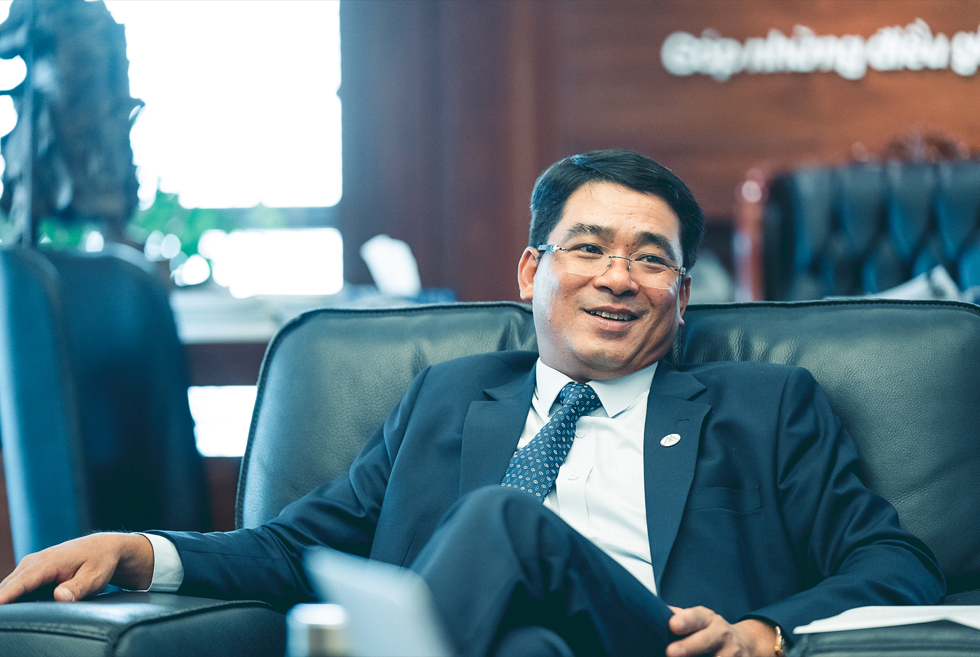Có ví dụ cụ thể nào về sự đồng điệu mà ông nhận thấy mình có được với ban lãnh đạo và cán bộ công nhân viên của Xuân Mai?
Thời điểm đầu mới vào, công ty rất khó khăn và chúng tôi phải tìm các nguồn tài chính khác nhau để duy trì hoạt động. Có người đề xuất bán bớt một số tài sản trong đó có nơi phát tích của Xuân Mai để trả nợ.
Lúc đó, tôi có trả lời là khó khăn thì phải tìm cách giải quyết và mọi người cần nỗ lực nhưng tài sản các cụ để lại thì không được bán. Nếu bán đi, sau này chúng ta giàu lên, có tiền cũng không mua lại được nơi phát tích của Xuân Mai. Cái này cũng giống như nhà thờ tổ trong gia đình, không được bán nhà thờ tổ.
Có người đã khóc khi nghe điều này khiến tôi cũng ngạc nhiên. Bởi tôi nghĩ điều đó bình thường thôi vì đó là quan điểm kinh doanh của mình mà. Nhưng có lẽ suy nghĩ của mình đã chạm được vào cảm xúc, niềm tự hào và kiêu hãnh của anh em…
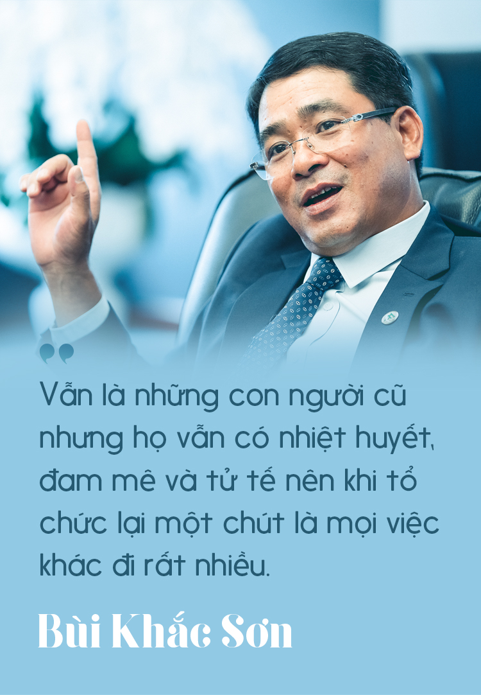 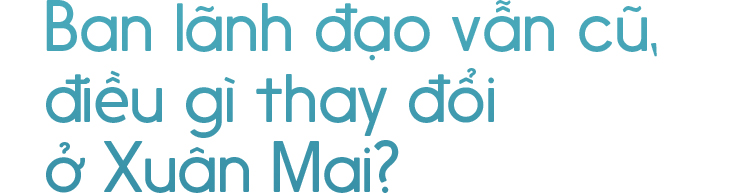Dùng toàn bộ ban lãnh đạo cũ, vậy Xuân Mai mới thay đổi gì so với Xuân Mai cũ?
Thay đổi lớn nhất là ở việc quản trị nội bộ. Trước đây, các nghị quyết của HĐQT giao cho Ban Tổng giám đốc thực hiện. Còn khi thay đổi, Xuân Mai lập ra 4 Ủy ban do HĐQT trực tiếp điều hành gồm: Ủy ban Tài chính (xây dựng kế hoạch tài chính và quản trị dòng tiền), Ủy ban Đầu tư và kinh doanh (định hướng về kinh doanh, kiểm soát toàn bộ công tác đầu tư tài sản, dự án), Ủy ban Nhân sự và quản lý chi phí, Ủy ban Giám sát.
Bốn Ủy ban này thúc đẩy rất mạnh sự thay đổi bên trong Xuân Mai. Sau 3 năm khi mọi việc vào khuôn khổ thì Ủy ban Giám sát được giải tán và chỉ còn tổ kiểm toán nội bộ.
Thực ra, vẫn là những con người cũ nhưng họ vẫn có nhiệt huyết, đam mê và tử tế nên khi tổ chức lại một chút là mọi việc khác đi rất nhiều. Ngay cả với Ủy ban Giám sát, chỉ sau một thời gian ngắn, mọi người đều nhận ra là Ủy ban được lập ra để đảm bảo tính công bằng trong đánh giá chứ không nhằm mục đích khác.
Người nào làm tốt sẽ được đánh giá đúng, người nào làm không tốt, lười… thì đương nhiên phải đứng ra ngoài hàng quân thôi. Khi mọi người được làm và nhận đúng với năng lực của mình thì đều an tâm làm việc, không có vấn đề gì lớn xảy ra cả.
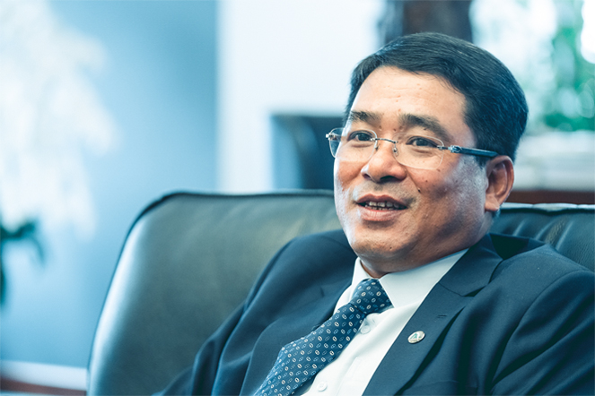Vậy với bên ngoài, công cuộc Xuân Mai tái cấu trúc được thể hiện ra sao?
Thực ra, một trong những giá trị cốt lõi của Xuân Mai là công nghệ. Chúng tôi là công ty duy nhất đạt giải thưởng cấp Nhà nước về công nghệ xây dựng với bê tông dự ứng lực tiền chế và tấm tường Acotec. Khi thi công, Xuân Mai không gây ảnh hưởng đến môi trường và sử dụng vật liệu “xanh”…
Kiên định với việc trở thành một nhà thầu định hướng công nghệ là điểm khiến Xuân Mai khác biệt và có ưu thế so với các công ty khác. Thực tế, trong ngành xây dựng, rất ít công ty có được đội ngũ làm công nghệ xây dựng tốt như chúng tôi.
Ngoài việc sử dụng công nghệ như một yếu tố chiến lược thì việc quản lý chi phí tốt hơn ở các dự án bằng tăng năng suất lao động là nhân tố quan trọng bậc nhất trong việc cải thiện hiệu quả kinh doanh. Đây là điều trước đây Xuân Mai làm chưa tốt.
Eco Green Sài Gòn - dự án có tổng vốn đầu tư gần 10.000 tỷ do Xuân Mai Corp. làm tổng thầu
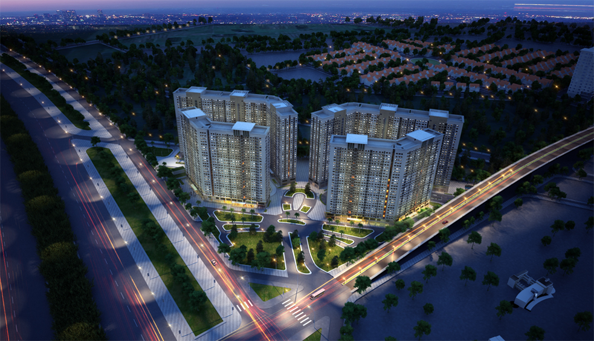Dự án Xuân Mai Dương Nội
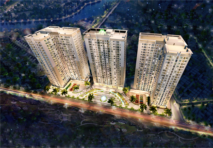Dự án Eco Dream
Dự án Eco Green City Nguyễn Xiển
Một ví dụ điển hình để thấy sự thay đổi rất lớn về hiệu quả kinh doanh là dự án 8 tòa chung cư của Xuân Mai tại khu đô thị Dương Nội (mua lại đất từ Tập đoàn Nam Cường).
Chúng tôi xây chung cư bán với giá trung bình 17-18 triệu đồng/m2 mà có thể xây 2 tầng hầm thoải mái cho việc để xe của cư dân, bể bơi, cây xanh, thang máy tốc độ cao… và nội thất với khu vệ sinh được làm toàn bằng thương hiệu TOTO (Nhật Bản).
Thế nhưng, dự án này vẫn mang lại lợi nhuận rất tốt và bán hết 100% căn hộ của 8 tòa sau hơn 2 năm bán hàng. Nhờ những dự án như Xuân Mai Dương Nội, chúng tôi trở nên nổi tiếng với nhà thương mại giá cạnh tranh nhưng lại có chất lượng cao, môi trường sống tiện nghi.
Năm 2017, Xuân Mai lập thêm cột mốc mới với doanh thu 2.350 tỷ và lợi nhuận 130 tỷ đồng – cao nhất trong lịch sử công ty. Làm được điều đó là do trình độ quản lý dự án của chúng tôi đã thay đổi rất nhiều; Xuân Mai vừa là chủ đầu tư, kiêm thi công nên kiểm soát tiến độ, chi phí tốt hơn và đương nhiên hiệu quả cũng lớn hơn.
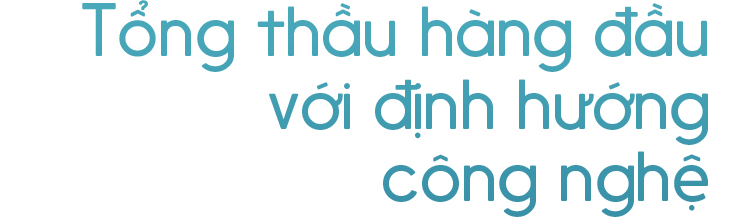Sau 5 năm tái cấu trúc, thay đổi lớn nhất ở Xuân Mai là gì?
Đầu tiên là sự chuyên nghiệp trong công việc. Thứ hai là trình độ quản lý cao hơn rất nhiều. Trước đây, chúng tôi đảm nhận những phần công việc rất khó trong các dự án lớn nhưng vẫn là thầu phụ. Còn giờ đây, Xuân Mai đã làm tổng thầu cho nhiều dự án trong đó có Eco Green Sài Gòn - dự án đang thi công với tổng vốn đầu tư lên tới 10.000 tỷ đồng ở quận 7.
Bây giờ, chúng tôi không còn là đơn vị chỉ thực thi những điều người khác vạch ra nữa, mà đã có đủ khả năng lên kế hoạch tổng thể, quản trị các nhà thầu khác để thực hiện toàn bộ dự án.
Nhờ việc áp dụng nhiều công nghệ mới vào thi công, ứng dụng CNTT trong quản lý, cộng với việc giảm tối đa công nhân tại công trường… năng suất lao động của Xuân Mai tăng lên rất nhiều. Giờ đây, khi thi công phần kết cấu, chúng tôi chỉ mất 4 ngày/tầng và sau khi cất nóc toà nhà 4 tháng là có thể bàn giao căn hộ.
Đặc biệt, Xuân Mai đã triển khai tốt công nghệ quản lý BIM khi thực hiện dự án.
Còn mục tiêu trong 5 năm tới?
Chúng tôi vẫn kiên định với định hướng trở thành một tổng thầu hàng đầu của Việt Nam bằng công nghệ xây dựng như công nghệ bê tông dự ứng lực bán tiền chế, được quản lý trong nhà máy và đưa vào nhiều vật liệu mới, vật liệu xanh thân thiện môi trường vào các công trình và trở thành nhà phát triển bất động sản uy tín.
Với các dự án bất động sản, nếu như trước đây, Xuân Mai tập trung vào phân khúc nhà thương mại giá trung bình thì hiện giờ chúng tôi tham gia vào các dự án bất động sản có quy mô lớn hơn với phân khúc phù hợp với thị trường.
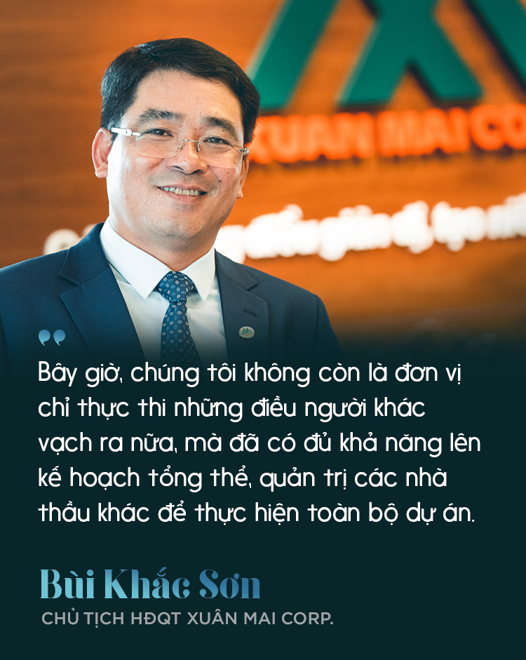Sau 5 năm tái cấu trúc Xuân Mai, về mặt cá nhân, ông rút ra được bài học gì?
Đầu tiên bài học đối với tôi là phải trách nhiệm, sự đàng hoàng trong công việc là động lực cho mọi người đi theo và tin tưởng mình. Tôi rất thích khẩu hiệu của Xuân Mai “Góp những điều giản dị, tạo niềm tin vững bền” – triết lý này đã đi cùng và sống với công ty 35 năm nay và sẽ còn đúng trong nhiều năm nữa.
Những con người ở Xuân Mai luôn muốn đóng góp cho xã hội bằng những điều giản dị, không phải những điều phi thường, nhưng thực sự tạo ra giá trị và niềm tin. Đó là niềm tin với cổ đông, đối tác và lớn hơn là với chính những cán bộ công nhân viên của Xuân Mai. Còn đối với xã hội, niềm tin vào Xuân Mai cần trở thành một thương hiệu trên mỗi công trình chúng tôi làm.